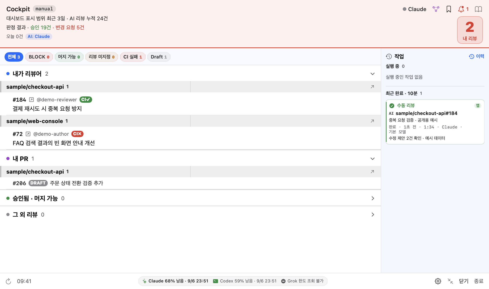

재발에는 새 티켓, 과거 대응은 이력으로
완료된 이슈가 다시 발생하면 과거 티켓은 보존하고 새 티켓을 연관 연결할 수 있습니다.

문서 기준 1.34.22 · 2026.09.06 갱신
코드 리뷰, 대응 알림, 로컬 실행, 로그, 배포와 티켓처럼 하루 동안 오가는 업무를 메뉴 막대의 한 작업 공간에서 보고 실행하고 다시 이어갑니다.

앱의 SwiftUI 컴포넌트를 공개용 예시 데이터로 렌더링했습니다. 실계정 캡처가 아닙니다. 이미지 제작 기준
설정 위치와 동작 결과를 함께 안내합니다. 아래는 실제 앱 컴포넌트에 예시 데이터를 넣은 화면이며, 실제 업무 내역이나 실행 결과가 아닙니다.
완료된 이슈가 다시 발생하면 과거 티켓은 보존하고 새 티켓을 연관 연결할 수 있습니다.
WARNING 자동 분석과 심화 조사는 각각 기본 꺼짐입니다. 심화 모드도 운영 DB·캐시에 직접 접속하거나 변경하지 않습니다.

오늘 Cockpit을 사용하지 않아도 조회 가능한 계정 한도는 표시합니다. 조회할 수 없는 한도를 0%로 보여 주지 않습니다.

Grafana 서비스 계정 토큰을 설정 화면에서 저장합니다. 토큰 없는 브라우저 수집과 API 연결은 서로 다른 상태입니다.

Slack 경고 수신만으로 분석 성공을 뜻하지 않습니다. 작업 이력에서 성공·실패·보류 이유와 실행 당시 AI 정보를 확인하세요.

새 기능의 위치와 시작 조건까지 함께 확인하세요.
선택한 채널의 새 root FIRING·WARNING을 조사해 원문 Slack 스레드에 게시합니다. 기본 꺼짐이며 담당 PC 한 대에서만 켜세요.
가이드에서 확인A work flight plan
PR, 알림, 티켓, 로컬 실행이 달라도 같은 작업 맥락을 따라갑니다.
GitHub의 리뷰·CI, Slack·Loki의 오류, 로컬 서비스 상태처럼 다음 행동에 필요한 신호를 읽습니다.
리뷰, 원인 분석, 티켓 생성, 로컬 실행과 배포를 선택한 방식으로 시작하고 현재 단계를 표시합니다.
수동 작업은 내용을 확인해 반영합니다. 자동 리뷰·WARNING 자동 게시처럼 미리 켠 자동화는 설정한 조건에서 외부 서비스에 결과를 기록합니다.
작업 ID와 실행 정보를 보존합니다. 앱이나 worker가 다시 시작돼도 대상·단계·결과와 이력을 복구합니다.
Capabilities
기능이 없는 환경도 정상적인 상태로 취급합니다.
상태 필터, 내 PR, 리뷰 요청, 머지 가능 PR과 작업 이력을 한 화면에서 확인합니다.
일반·사전 리뷰, 인라인 코멘트, 스레드 요약과 답글 초안을 필요할 때 실행합니다.
서비스별 오류 추이와 원문 로그를 보고, 필요한 이슈만 AI 조사로 연결합니다.
반복 이벤트를 이슈·원인으로 묶고 조사중, 해결, 무시, Jira 연결과 완료 티켓 정리를 한 흐름에서 처리합니다.
Workspace에 등록한 서비스의 Local Run, 구조화 로그, 테스트 주문, 배포, Sourcegraph와 Grafana 조사를 모읍니다.
모델, effort, 경과시간, 적용 기준과 종료 결과를 작업 ID 단위로 보존합니다.
AI·Loki·Slack이 없으면 관련 UI만 비활성화하고 GitHub PR 기능은 그대로 유지합니다.
Ready for local
사내 GitHub 계정으로 marketplace를 등록한 뒤 설치 명령을 실행합니다. 플러그인은 승인된 통합 Release만 내려받고 SHA-256을 검증한 후 앱과 worker를 함께 설치합니다.
gh auth login · 사내 저장소 접근# 1. GitHub 인증
$ gh auth login
# 2. 사내 marketplace와 설치 플러그인 등록
$ claude plugin marketplace add \
musinsa/cs-claude-marketplace
$ claude plugin install \
cs-pr-review-app@cs-claude-marketplace
# 3. Claude Code에서 설치 실행
$ claude
› /cs-pr-review-app:install
# 설치 상태 확인
› /cs-pr-review-app:install doctor
✓ app ✓ worker
✓ GitHub ○ AI (선택)
○ Loki ○ Slack각 PC에서 본인 계정으로 인증하세요. AI는 CLI 로그인, Loki는 서비스 계정 토큰을 사용합니다. 첫 연결 안내
업데이트는 /cs-pr-review-app:install update · 제거는 /cs-pr-review-app:install uninstall
Local by design
이 안내 페이지는 예시 데이터로만 구성됩니다. Cockpit의 저장소, PR 정보, 연동 토큰과 작업 이력은 이 페이지로 전송되지 않습니다. 앱에서 AI를 실행하면 필요한 코드·로그가 선택한 AI로 전달되고, 게시 기능은 연결한 서비스에 결과를 보냅니다.
Before takeoff
아니요. 허용된 저장소와 Grafana에서 읽을 수 있는 근거만 확인합니다. 실제 DB·캐시에 직접 접속하지 않으며, 권한이나 근거가 없으면 미확인 이유를 남깁니다. 심화 조사 범위
같은 채널은 담당 PC 한 대에서만 켜세요. 중복 방지는 로컬 PC 기준이므로 여러 PC가 각각 분석·게시할 수 있습니다.
AI는 Cockpit에 API 토큰을 저장하지 않고 각 사용자가 선택한 CLI의 로그인 계정을 사용합니다. 설정 → 연동 서비스 → AI의 안내를 확인하세요. WARNING 자동 조사는 현재 Claude를 사용합니다.
네. GitHub PR 조회, 상태 필터, 상세 확인 등 비AI 기능은 그대로 동작합니다. AI가 필요한 버튼은 비활성 상태와 이유를 표시합니다.
실패하지 않습니다. 두 연동은 선택 사항이며, 설정하지 않으면 해당 모니터링·알림 기능만 쉬어갑니다.
게시형 리뷰는 백그라운드 worker가 소유합니다. 앱을 닫았다 다시 열어도 진행 상태와 종료 결과를 다시 확인할 수 있습니다.
Spotlight에서 Cockpit을 다시 열면 일반 창으로 접근할 수 있습니다. 메뉴 막대 공간이 부족하면 macOS가 항목을 숨길 수 있습니다.